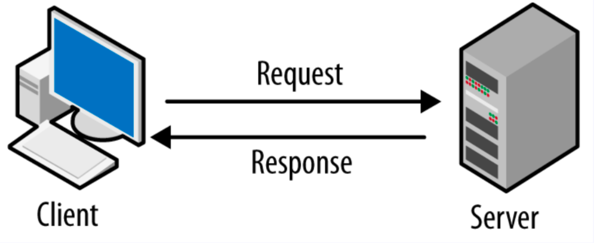

What is Internet?
Internet Meaning :
=> The Internet is a global network that connects computers and devices around the world so people can share information, communicate, and use online services (like websites, email, videos, games, shopping).
How Data Sharing :
=> Data sharing means sending or receiving information from one device to another through the Internet or any network.
How does actual Data Sharing happen ?
Types of Address :
IP Address
MAC Adddress
Port Address
1. IP Address :
32 Bit Number
=> IP address is like a home address for your device on the Internet or network.
=> Just like your house has a unique address so people can send you letters, your phone, computer, or any device has an IP address so that data (like messages, videos, websites) can be sent to the right device.
=> IP Address is not Permanent Address.
=> IP Address Exp : 192.168.1.2
Who Provide IP Address?
=> ISP Provides IP Addresses.
=> ISP (Internet Service Provider) --- Jio, Airtel, Vi, BSNL...
Note : Network On ---> IP Provides
Network Off ---> IP Delete
What is DNS?
=> Domain Name System
=> DNS (Domain Name System) is like the phonebook of the internet.
- You remember names (like google.com) easily.
- Computers understand numbers (like 142.250.183.238, which is an IP address).
- DNS works in between: it converts the website name you type into the browser into the correct IP address so your computer can connect to the right server.
👉 Without DNS, you would have to type long numbers instead of easy names.
2. MAC Address :
48 Bit Number
MAC Address (Media Access Control Address) is like a unique ID number for your device’s network card.
- Every device (like your phone, laptop, or Wi-Fi router) has a network card.
- That card gets a permanent unique number called a MAC address.
- It usually looks like this: A4:5E:60:12:34:BC (mix of numbers and letters).
👉 Think of it like your device’s fingerprint on a network — it’s unique and used to identify your device when connecting to Wi-Fi or any network.
3. PORT Address :
16 Bit Number
Unsigned INT (No Negative)
Total PORT Number : 65,536
=> Port Number is like a door number in your computer.
- Your computer has one big address (its IP address) — like a building.
- Inside that building, there are many doors (port numbers) — each used by a specific service.
- Example:
- Door 80 = Website browsing (HTTP)
- Door 443 = Secure websites (HTTPS)
- Door 25 = Email sending (SMTP)
👉 So, the IP address finds the right computer, and the port number finds the right service (program) inside it.
Types of PORT Number :
Well Known Ports (0 - 1023)
- Used by common services.
- Example :
- 80 → HTTP (websites)
- 443 → HTTPS (secure websites)
- 25 → SMTP (email sending)
Registered Ports (1024 – 49151)
- Used by software applications.
- Example :
- 3306 → MySQL database
- 3389 → Remote Desktop
Dynamic / Private / Ephemeral Ports (49152 – 65535)
- Temporary ports used by your computer when you browse or connect online.
- Example: When you open a website, your browser randomly picks one of these ports to communicate.
👉 Simple Explanation:
- Well-known ports = fixed doors for popular services.
- Registered ports = doors reserved for specific apps.
- Dynamic ports = temporary doors your computer uses automatically.
What is Router?
Router is a device that connects your home devices (like phone, laptop, TV) to the internet.
- It works like a traffic police for data.
- It decides where the data should go — from your device to the internet, and from the internet back to the correct device.
- It also lets many devices share one internet connection.
👉 Simple Explanation:
- Modem = brings internet into your home.
- Router = distributes that internet to all your devices (through Wi-Fi or cables).
What is IPv4?
IPv4 (Internet Protocol version 4) is like a house address system for computers.
- Every device (mobile, laptop, PC, router, etc.) connected to the internet needs an address so that data knows where to go.
- IPv4 gives each device a unique address written in numbers, like 192.168.1.1.
- It uses 32 bits, so it can create around 4.3 billion unique addresses.
👉 In short: IPv4 is the old but most common way of giving an address to devices on the internet, so they can send and receive data.
What is IPv6?
IPv6 (Internet Protocol version 6) is just a newer version of IP addresses made because IPv4 addresses are running out.
- Instead of 32 bits like IPv4, it uses 128 bits, which means it can make a huge number of addresses (almost unlimited compared to IPv4).
- An IPv6 address looks longer and uses letters + numbers, like:2001:0db8:85a3:0000:0000:8a2e:0370:7334
- It’s faster, more secure, and supports the growing number of devices (phones, laptops, smart TVs, IoT, etc.).
👉 In short: IPv6 is the new, bigger address system for the internet, designed to replace IPv4 and handle the future.